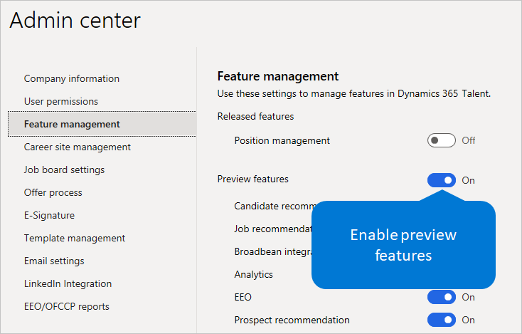

Funktionen verwalten
Important
Dynamics 365 Talent: Attract- und Onboard-Apps werden eingestellt. Weitere Informationen finden Sie unter Einstellen von Dynamics 365 Talent: Attract- und Onboard-Apps.
Im Rahmen unseres kontinuierlichen Rollouts von Human Capital Management (HCM) Funktionen für Microsoft Dynamics 365 Human Resources, wollen wir unseren Kunden so schnell wie möglich neue Funktionen zur Verfügung stellen. Administratoren können Vorschaufunktionen in ihrer Umgebung sehen und nutzen. Diese Funktionen sind fast fertig für die allgemeine Verfügbarkeit und wurden ausgiebig getestet. Wir sind nur auf der Suche nach einer letzten Runde von Kunden-Feedback und Validierung, bevor wir sie zur allgemeinen Verfügbarkeit veröffentlichen.
In diesem Thema wird beschrieben, wie Sie die Vorschaufunktionen aktivieren können, und es werden die Funktionen aufgeführt, die derzeit für Vorschau aktiviert sind. Diese Liste wird aktualisiert, wenn die Funktionen zur allgemeinen Verfügbarkeit freigegeben werden und wenn neue Funktionen zur Vorschau freigegeben werden. Es erfolgt keine Benachrichtigung, wenn neue Funktionen zur Vorschau freigegeben werden. Die Benutzer werden nur beginnen, die Funktionen zu sehen. Weitere Informationen über neue Funktionen im Talent, finden Sie unter Neuheiten oder Änderungen in Dynamics 365 Talent und Dynamics 365 und Power Platform-Versionshinweise.
Vorschaufunktionen aktivieren oder deaktivieren
Um auf Vorschaufunktionen zugreifen zu können, müssen Sie sie in Ihrer Umgebung zunächst aktivieren. Aktivieren oder Deaktivieren von Vorschaufunktionen ist umgebungsspezifisch.
Important
Durch das Aktivieren der Einstellung Vorschaufunktionen aktivieren Sie Vorschaufunktionen für alle Benutzer in Ihrer Organisation, die sich in dieser Umgebung befinden. Wenn Sie die Einstellung deaktivieren, deaktivieren Sie die Vorschaufunktionen und machen sie für Ihre Benutzer unzugänglich. Die Vorschaufunktionen werden in Talent nur eingeschränkt unterstützt. Sie verwenden möglicherweise weniger Datenschutz- und Sicherheitsmaßnahmen und sind nicht in der Talent-Service-Level-Vereinbarung (SLA) enthalten. Sie sollten keine Vorschaufunktionen verwenden, um personenbezogene Daten (d. h. Informationen, die Sie identifizieren könnten) oder andere Daten zu verarbeiten, die gesetzlichen oder behördlichen Anforderungen unterliegen.
Attract
Melden Sie sich bei Microsoft Dynamics 365 Talent: Attract an.
Wählen Sie im Setup-Menü (das Zahnradsymbol) in der oberen rechten Ecke Admin Center.
Wählen Sie auf der Registerkarte Funktion-Verwaltung die Option neben Vorschau-Funktion, so dass sie blau wird und anzeigt Ein.

Dient zum Auswählen oder stornieren von einzelnen Vorschaufunktionen. Wenn Sie nichts tun, werden alle verfügbaren Vorschaufunktionen aktiviert.
Aktualisieren Sie Ihren Browser, um die neuen Funktionen zu sehen. Alle Benutzer, die bereits angemeldet sind, sehen die Funktionen beim nächsten Mal, wenn sie sich anmelden, oder sie können ihren Browser aktualisieren, um die Funktionen sofort zu sehen.
Note
Einige Vorschaufunktionen erfordern ggf. zusätzliche Konfiguration. Folgen Sie den Links neben der Vorschaufunktion, um die Einstellungen für diese durchzuführen.
Feedback
Wir möchten von Ihnen über Ihre Erfahrung mit diesen Vorschaufunktionen hören Wir empfehlen Ihnen, Ihr Feedback regelmäßig auf den folgenden Seiten zu veröffentlichen, wenn Sie diese oder andere Funktionen nutzen:
Community - Diese Seite ist eine großartige Ressource, auf der Benutzer Anwendungsfälle diskutieren, Fragen stellen und Hilfe von der Community erhalten können.
Teilen Sie uns mit, welche Funktionen Sie im Produkt sehen möchten und welche Änderungen Ihrer Meinung nach an bestehenden Funktionen vorgenommen werden sollten. Verwenden Sie die folgenden Webseiten, um Produktideen vorzuschlagen:
Stellen Sie sicher, dass Sie keine persönlichen Daten (Informationen, die Sie identifizieren könnten) in Ihre Feedback- oder Produktbewertungseinreichungen mitsenden. Die gesammelten Informationen können weiter analysiert werden und werden nicht zur Beantwortung von Anfragen im Rahmen der geltenden Datenschutzgesetze verwendet. Personenbezogene Daten, die im Rahmen dieser Programme separat erfasst werden, unterliegen der Microsoft-Datenschutzerklärung.
Tip
Setzen Sie ein Lesezeichen für dieses Thema und schauen Sie regelmäßig vorbei, um über neue Vorschaufunktionen auf dem Laufenden zu bleiben, wenn wir sie veröffentlichen.